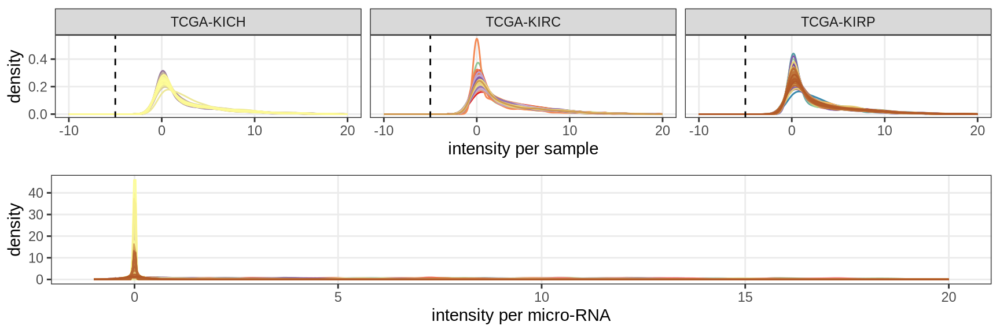
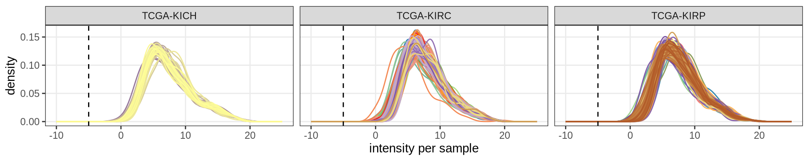
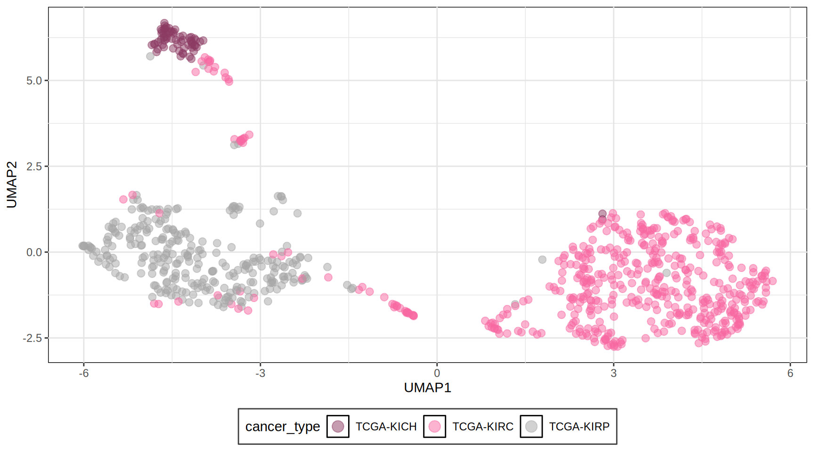
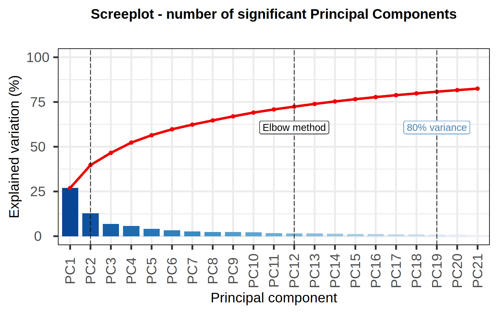
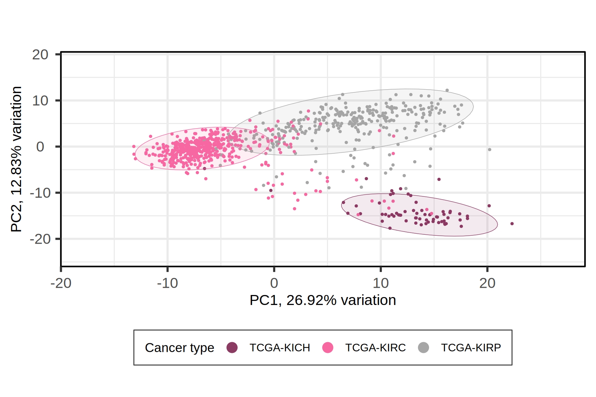
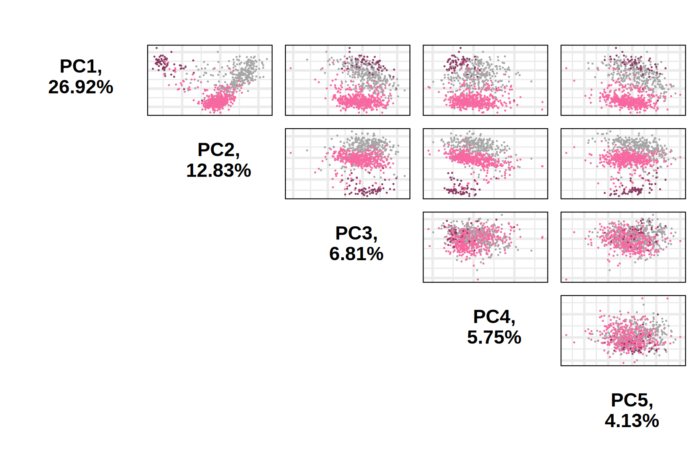
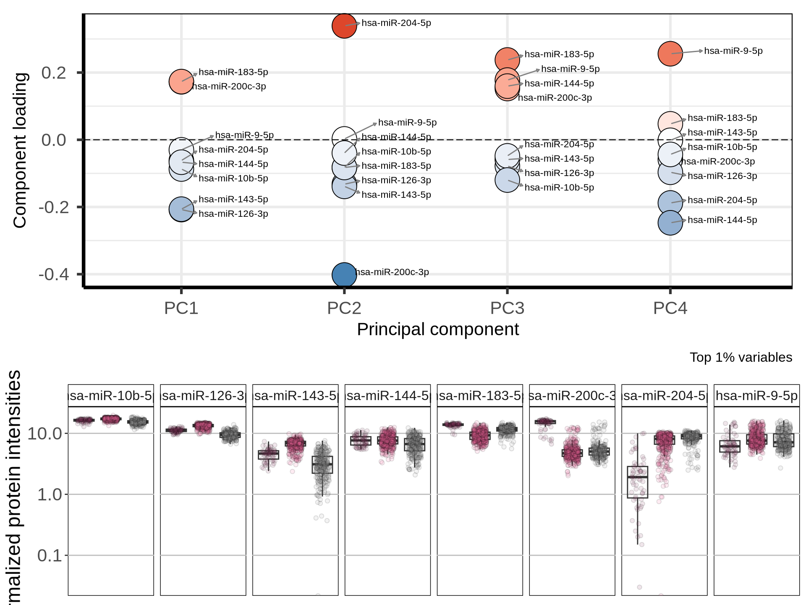
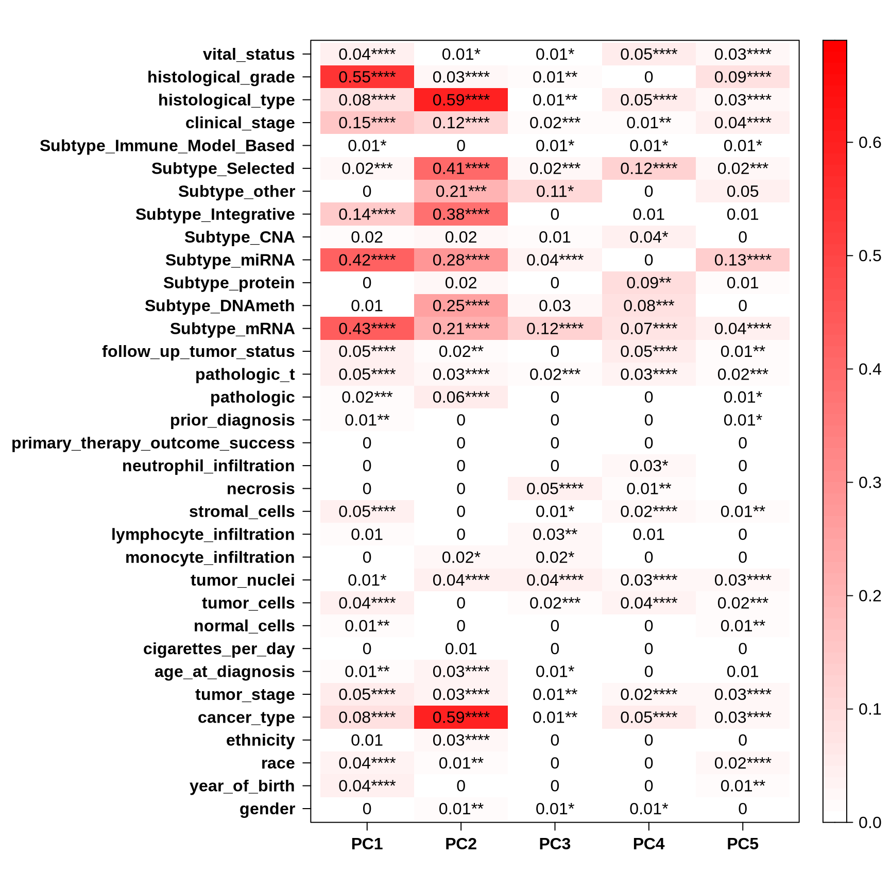
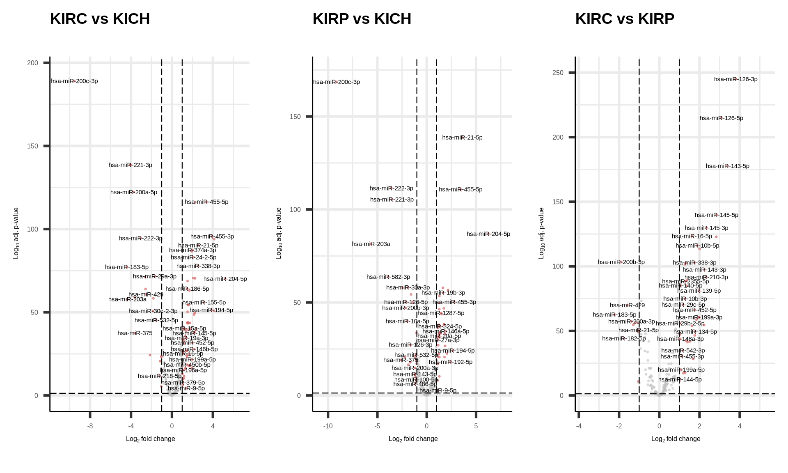
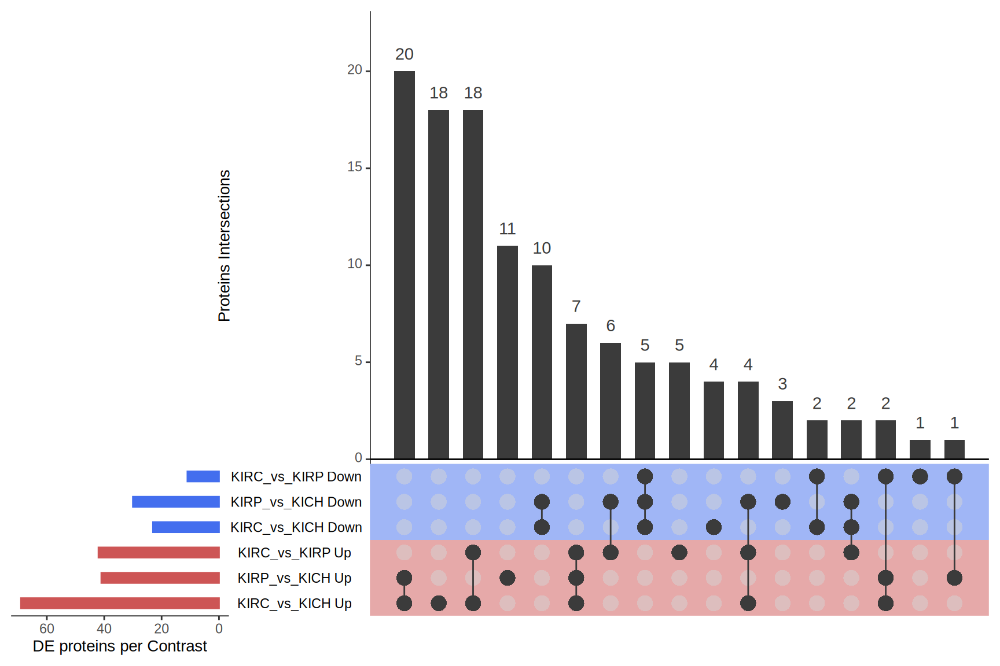

4 micro-RNAs Analysis
4.1 On this page
Biological insights and take-home messages are at the bottom of the page at Lesson Learnt: Section 2.6.
- Here we investigate the transcriptomics data across the three Kidney Cancers.
- First we filter lowly expressed genes and we do some exploratory analyses on samples, gene expression and clinical covariates.
- We then run a formal Differential Gene Expression analysis to identify genes that have different expression levels across the three Kidney cancer types.
- We perform Gene Set Enrichment Analyses on the differentially expressed genes to investigate biological and molecular themes that discriminates between the three Kidney cancer types.
- Finally, we characterize the tumour micro-environments of the three Kidney cancer types by quantifying the tumour-infiltrating immune cells.
For TCGA Kidney cancer micro RNAs data, we will perform analyses similar to the ones performed for the transcriptomics one (see Chapter 2). We first start with an overview of the datasets and QC.
4.2 micro-RNAs data overview and QC
4.2.1 micro-RNAs counts overview
Let’s check the spectral counts distributions across samples, and the protein completeness across samples.
We have 846 samples and 743 micro RNAs
No missing values (100% occupancy)
It looks like the miRNAs would benefit from a clean up / filtering of lowly expressed miRNAs
Overabundance of miRNAs with average expression == 0
data seems already log2 cpm :(
not the best set for filtering by expression
table(keep.exprs) keep.exprs FALSE TRUE 553 190
553 miRNAs are discarded

4.3 Dimesionality Reduction and Dataset Exploration
4.3.1 UMAP on filtered transcriptomics data
Let’s check the samples clustering on a UMAP.
Division is waaay less clear than the other omics modalities .

4.3.2 Principal Component Analysis (PCA)
As we did for the transcriptomics data (see Chapter 2)., the next step in the Dataset exploration is to perform the Principal Component Analysis.

The first 21 Principal Components capture more than 80% of the variance in the Kidney cancers transcriptomics dataset, with the first two components (PC1 and PC2) capturing a bit more than 40% of the variance.
When we project the samples in the PC1 and PC2, we can see that the PC1 separates KIRC from KICH and KIRP, which instead cluster together. The second component PC2, instead, seems to separate KICH and KIRP samples. The separation between KICH and KIRP samples along component PC2 is clearer in the proteomics data than in the transcriptomics data.


Let’s check the loadings (i.e.: 21 Principal Components capture more than 80% of the variance in the) for the top 4 Principal Components. These indicate which genes are the more responsible to explain the position of the samples along the components, and the direction of this separation.
[[[[ADAPT TO PROTEOMICS RESULTS]]]]
Looking at the top 1% most variable genes (~ 140 genes), the following 5 genes are the top loadings for the first 4 Principal Components:
[[[[ADAPT TO PROTEOMICS RESULTS]]]]
Let’s now check the expression of the five top genes identified with the PCA across the cancer types:

The miR-200 family as prognostic markers in clear cell renal cell carcinoma
mir-200c
https://pubmed.ncbi.nlm.nih.gov/31635993/
Let’s check the Pearson correlation with other clinical covariates.
[[[[ADAPT TO PROTEOMICS RESULTS]]]]
Certain histological and molecular subtyping correlates perfectly with PC1 and PC2 (which discriminates KICH) immune infiltrating cells also correlates with PC1 and PC2, and may help to further characterize the subtypes and stratify patients
As we have learnt before (Section 1.3.7), KIRC patients seems to had a worse outcome than KIRP and to have tumors in more advanced stages. PC1 (computed from transcriptomics data) clearly separates KIRC and KIRP samples, and it correlates with tumor histological grade and stage, as well as clinical outcome. This show that we have good correlation between clinical observations and gene espression in Kidney cancers.
sadly, no correlation between the top 5 components and the outcome of therapeutic care.
[[[[ADAPT TO PROTEOMICS RESULTS]]]]

4.4 Differential gene expression analysis
In addition to cancer type, we saw that age, ethnicity (and race) and age had somewhat a correlation with the cancer types.
We may want to include this covariates in the differential gene expression analysis in order to include their contribution into the model.
print(summary(dt)) KIRC_vs_KICH KIRP_vs_KICH KIRC_vs_KIRP Down 49 68 58 NotSig 23 35 27 Up 118 87 105
4.4.1 Identification of differentially expressed proteins


4.5 Lessons Learnt
[[[[PROPER DESCRIPTION OF FINDINGS AND TRANSCRIPTOMICS ENRICHMENTS]]]]
So far, we have learnt:
- A